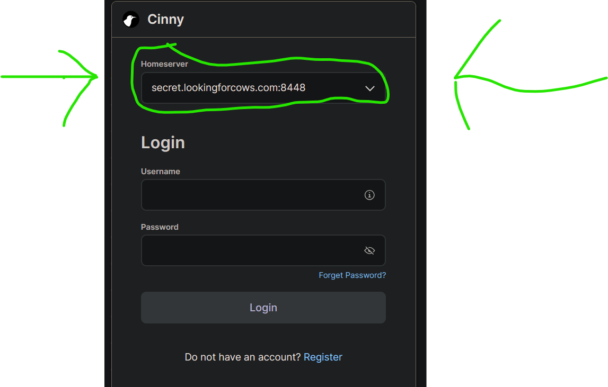

It's a chat server built inside the good old comforts of a 2008 macbook
For homeserver you must enter: secret.lookingforcows.com:8448
(Copy and paste that before you go to the next screen) (If you haven't logged in before)
P.S Don't forget to change the homeserver.